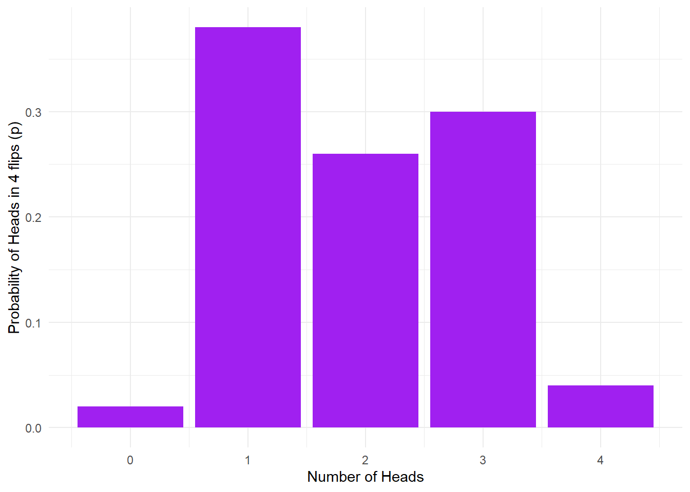
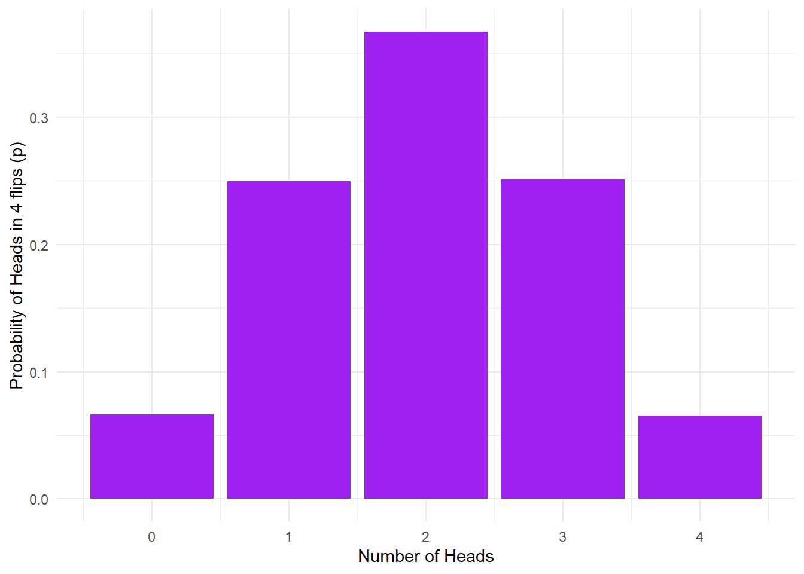
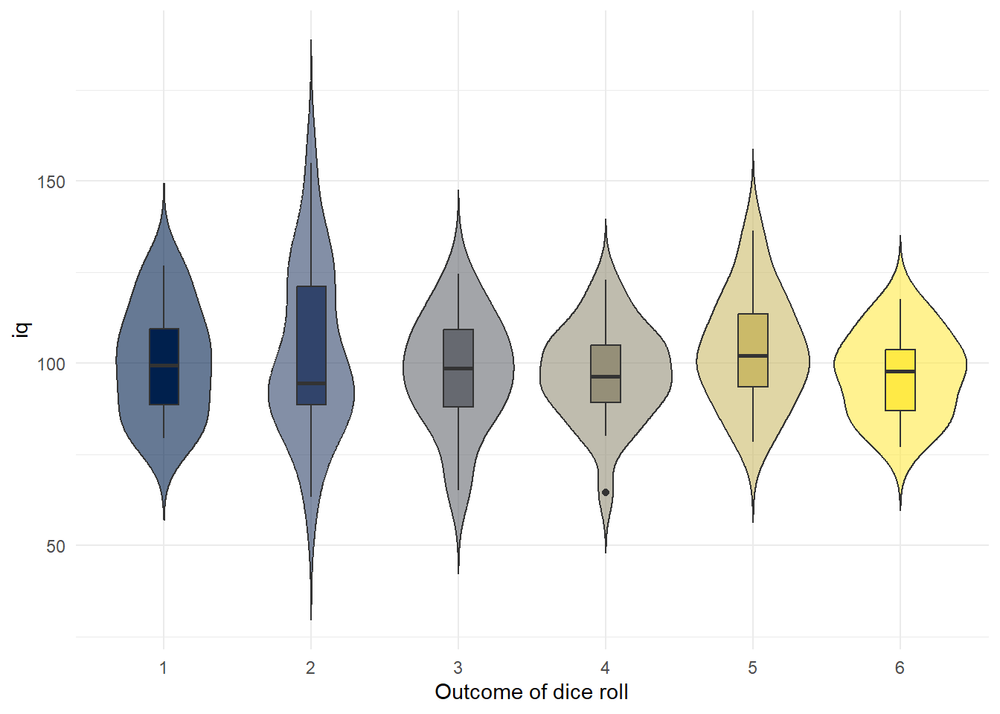

[1] "HEADS" "TAILS" "HEADS" "HEADS"15 Simulation
Before we finish up with a chapter on analysing your project data, we’re going to introduce a few new functions to show you some other things that R can do and that will also reinforce your understanding of probability.
15.1 Simulation
One of the most powerful features of R is that you can use it for data simulation. Data simulation is the act of generating random numbers that follow a certain distribution or have known properties. This might not sound particularly impressive, but simulating data means that you can do things such as plan your statistical analyses, understand and demonstrate how probability works, or estimate how many participants you need to test in your experiment based upon what you think the data will look like. Data simulation uses the different types of distributions that we covered in Probability to generate data, so make sure that you’re happy with the probability chapter before you move on.
15.2 Activity 1: Set-up
- Open RStudio and create a new project named “Simulation”
- Open a new R Markdown document, name it “Simulation” and save it in your project folder.
- There is no data to download this chapter so it’s a nice and simple set-up.
15.3 Activity 2: sample()
Just like Probability, all the functions we need for simulation are contained in Base R, however, we’ll also load the tidyverse so that we can wrangle our simulated data.
Let’s start by introducing the sample() function, which samples elements (data points) from a vector (a collection of things that are of the same type, like numbers or words). We can use sample() to simulate flipping a coin and build some of the graphs you saw in the probability chapter. sample() is used when we want to simulate discrete data, i.e., (nominal or ordinal data).
sample() requires you to define three arguments:
x= a vector of elements, i.e., all of the possible outcomes. For our current example, this would be HEADS and TAILS.
size= how many samples do you want to take, i.e., how many times do you want R to flip the coin?
replace= specifies whether we should sample with replacement or not. In the last lab we used the example of pulling names out of a hat. If you put the name back in the hat each time you pulled one out this would be with replacement, if you don’t put the name back in this would be sampling without replacement. Basically, do you want to be able to get the same outcome on different samples? For a coin flip, it should be possible to get the same outcome more than once, so we specifyTRUE. If we specifiedFALSEyou could only draw as many samples as there were unique values, so in our case we could only flip the coin twice: once it would land on heads, once on tails, and then we would run out of outcomes.Copy, paste, and run the below code in a new code chunk to simulate flipping a coin 4 times (and load the
tidyverse).
How many heads did you get? Don’t worry if it’s different to our example. Run the code again. How many heads did you get this time? How many do you get on each turn if you run the code five more times?
When you perform data simulation, you’re unlikely to get the same outcome each time you take a sample, just like if you flipped a coin 4 times on 5 separate occasions you would be unlikely to get the same number of heads each time. What’s so useful about data simulation is that we can use the outcomes from lots of different sampling attempts to calculate the probability of a particular outcome, e.g., getting 4 heads from 4 flips of a coin.
So that we can add up the number of heads and tails more easily, let’s simulate those coin flips again, but using numerical codes, 1 = HEADS, 0 = TAILS.
- Now that the outcomes are numeric, we don’t need the combine function
c
- 0:1 means all numbers from 0 to 1 in steps of 1. So basically, 0 and 1. If you wanted to simulate rolling a die, you would write
1:6which would give you all the whole numbers from 1 to 6.
15.4 Activity 3: sum()
Now that we’re using ones and zeroes we can count the number of heads by summing the values of the outcomes. The below code will sample our coin flips as above, and then count up the outcomes. Because we’ve coded heads = 1 and tails = 0, we can interpret the sum of all the outcomes as the number of heads.
- Copy, paste and run the code below in a new code chunk.
[1] 2Run this function multiple times (you can use the green markdown play arrow at the top right of the code chunk to make this easy). In our simulation of five sets of four flips we got 1, 3, 2, 2, and 3 heads. So in only one out of the five simulations did we get exactly one heads, i.e., a proportion of .2 or 20% of the time.
15.5 Activity 4: replicate() 1
Let’s repeat the experiment a whole bunch more times. We can have R do this over and over again using the replicate() function. replicate() requires two arguments (although there are other optional arguments if you want to do more complicated tasks):
n= the number of times you want to repeat your code
expr= the expression, or code, you want to repeat
Copy, paste and run the below code into a new code chunk to run the sample function and sum up the outcomes 20 times.
15.6 Monte Carlo simulation
Every year, the city of Monte Carlo is the site of innumerable games of chance played in its casinos by people from all over the world. This notoriety is reflected in the use of the term “Monte Carlo simulation” among statisticians to refer to using a computer simulation to estimate statistical properties of a random process. In a Monte Carlo simulations, the random process is repeated over and over again in order to assess its performance over a very large number of trials. It is usually used in situations where mathematical solutions are unknown or hard to compute. Now we are ready to use Monte Carlo simulation to demonstrate the probability of various outcomes.
15.7 Activity 5: replicate() 2
We are going to run our coin flip experiment again but this time we are going to run the experiment 50 times (each including 4 coin tosses), and use the same principles to predict the number of heads we will get.
- Copy, paste, and run the below code to run the simulation and store the result in an object `heads50** using the code below:
15.8 Activity 6: probability
We can estimate the probability of each of the outcomes (0, 1, 2, 3, 4 heads after 4 coin tosses) by counting them up and dividing by the number of experiments. We will do this by putting the results of the replications in a tibble() and then using count().
| heads | n | p |
|---|---|---|
| 0 | 1 | 0.02 |
| 1 | 19 | 0.38 |
| 2 | 13 | 0.26 |
| 3 | 15 | 0.30 |
| 4 | 2 | 0.04 |
Your numbers may be slightly different to the ones presented in this book - remember that by default, each time you run a simulation, you will get a different random sample.
15.9 Activity 7: visualisation
We can then plot a histogram of the outcomes using geom_bar().
# Note: stat = "identity" tells ggplot to use the values of the y-axis variable (p) as the height of the bars in our histogram (as opposed to counting the number of occurances of those values)
ggplot(data50, aes(x = heads,y = p)) +
geom_bar(stat = "identity", fill = "purple") +
labs(x = "Number of Heads", y = "Probability of Heads in 4 flips (p)") +
theme_minimal()
Pause here and interpret the above figure
- What is the estimated probability for flipping 0/4 heads? 1/4 heads? 2/4 heads? 3/4 heads? 4/4 heads?
Unfortunately sometimes this calculation will estimate that the probability of an outcome is zero since this outcome never came up when the simulation is run. If you want reliable estimates, you need a bigger sample to minimise the probability that a possible outcome won’t occur.
15.10 Activity 8: big data
Let’s repeat the Monte Carlo simulation, but with 10,000 trials instead of just 50. All we need to do is change n from 50 to 10000.
Again, we’ll put the outcome into a table using tibble and calculate counts and probabilities of each outcome using group_by() and summarise(). Remember to try reading your code in full sentences to help you understand what multiple lines of code connected by pipes are doing. How would you read the below code?
Finally, we can visualise this as we did earlier.

Using Monte Carlo simulation, we estimate that the probability of getting exactly one head on four throws is about 0.25. The above result represents a probability distribution for all the possible outcomes in our experiments. We can derive lots of useful information from this.
For instance, what is the probability of getting two or more heads in four throws? This is easy: the outcomes meeting the criterion are 2, 3, or 4 heads. We can just add these probabilities together like so:
You can add probabilities for various outcomes together as long as the outcomes are mutually exclusive, that is, when one outcome occurs, the others can’t occur. For this coin flipping example, this is obviously the case: you can’t simultaneously get exactly two and exactly three heads as the outcome of a single experiment. However, be aware that you can’t simply add probabilities together when the events in question are not mutually exclusive: for example, the probability of the coin landing heads up, and it landing with the image of the head being in a particular orientation are not mutually exclusive, and can’t be simply added together.
This is the basis of how we can calculate the probability of an outcome using a known distribution - by simulating a large number of trials we can use this as an estimate for how our data will look in the real world.
15.11 Activity 9: rnorm()
We can also use R to simulate continuous data that follow a normal distribution using rnorm(). You’ve actually used rnorm() before, all the way back in Intro to R from Psych 1A but we’ll go over it again.
nis the number of data points you wish to simulate which is the only required argument forrnorm()meanis the mean that you want your data to have. If you don’t provide this argument,rnorm()will use a default value ofmean = 0.sdis the standard deviation you want your data to have. If you don’t provide this argument,rnorm()will use a default value ofsd = 1.
Copy, paste and run the below code in a new code chunk. This will randomly generate 50 numbers that collectively have a mean of 10 and a SD of 2 and then store it in the object normal.
You can check that the data you have generated are as you expected by calculating the mean and SD of this new variable - you shouldn’t expect the values to be exactly 10 and 2 (remember, it’s randomly generated), but they should be reasonably close.
Finally, you can visualise your data with a density plot. Try changing the number of data points generated by rnorm() from 50 to 500 to 5000 and then see how the shape of the distribution changes.
15.12 Activity 10: Simulate a dataset
Finally, we can put all of this together to simulate a full dataset. Let’s imagine that we’re going to run an experiment to see whether 120 people will roll a higher number on a die if their IQ is higher. This is obviously a stupid experiment but psychology does occasionally do stupid things.
- First, let’s create a variable that has all of our subject IDs. We’re just going to assign our participants numerical codes.
Then we’re going to create a column for gender using a new but simple function rep which stands for “repeat”. The below code will create a variable that repeats “man” 40 times, then “women” 40 times, then “non-binary” 40 times.
Next, let’s simulate them all rolling a die once using sample().
Then, let’s simulate their IQ scores. IQ scores are standardised so that overall, the population has an average IQ of 100 and a SD of 15 so we can use this information to simulate the data with rnorm().
Finally, we can stitch all these variables together into a table.
Now that we’ve got our simulated data we could write code to analyse it even before we’ve collected any real data which will not only save us time in the future, but will help us plan our analyses and we could include this code in a pre-registration document.
For example, you could create a plot of IQ scores for each dice roll (remember these are not real data…)

15.13 Finished!
The final Data Skills activity is to analyse your group project data which means in terms of new stuff to learn, we’re done! In Psych 1A and 1B, we’ve tried to give you a solid introduction to common data skills you’ll need in order to conduct your own research. Even if you don’t intend to continue with psychology or quantitative research in the future, we hope that you’re proud of the skills you’ve learned. For some of you, R might not have been your favourite bit of the course, but you should be very proud of what you’ve achieved and with such a diverse class we hope you can see that programming isn’t an innate skill that only certain people can learn. It just take a a bit of work, some (hopefully) helpful teaching materials, and a lot of swearing at the error messages.